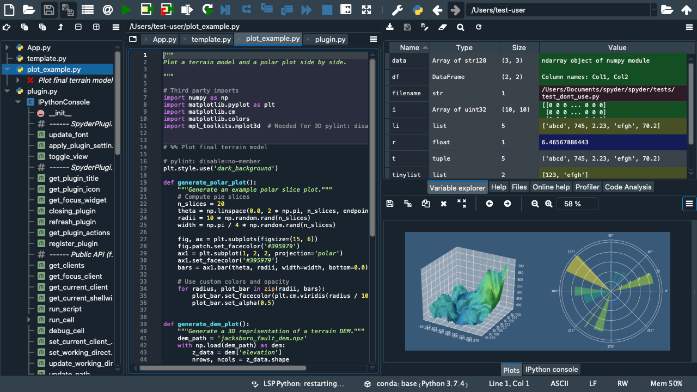

Welcome to Spyder’s Documentation#
Spyder is a powerful scientific environment written in Python, for Python, and designed by and for scientists, engineers and data analysts. It features a unique combination of the advanced editing, analysis, debugging, and profiling functionality of a comprehensive development tool with the data exploration, interactive execution, deep inspection, and beautiful visualization capabilities of a scientific package.
Where to go now?#
Spyder’s documentation provides a variety of resources that will help you learn how to use the application and explore each one of its panes. These include video tutorials, in-depth descriptions and how-to guides covering a wide range of needs and experience levels with Spyder.
If you are looking for a summary of its features and interface, check out the Tour.
If you don’t have Spyder installed and want to get started, follow the Install Guide.
If you are completely new to Spyder, watch our basic tutorial series, First Steps with Spyder.
If you are familiar with Spyder and want to explore the functionality of its panes in more detail, go to Panes.
If you’ve run into a Spyder problem and need help solving it, take a look at our troubleshooting guide.
If you have a question about Spyder, visit the Frequently Asked Questions section.
Join our community#
Spyder is open source software, which means that is free for everyone to use and anyone can contribute to it. We encourage everyone to become a part of our community and help develop Spyder!
Looking to contribute your code?#
Spyder is written in the same Python language that you use it to develop, so its easy to get started contributing to it. You can follow our contributing guide to set up a development environment, and you can get involved with the project through our Github repository. The easiest way to get started is helping us resolve items on our issue tracker, either by fixing bugs in Spyder, or helping users troubleshoot their problems (which doesn’t require writing any code).
Want to help writing docs?#
We welcome your contributions of corrections, additions and enhancements to these docs. Check out the docs contributing guide to learn how to submit a PR with your changes on our docs repo.
Interested in translating Spyder?#
In order to reach more users around the world in need of a powerful scientific Python environment, we welcome your help translating the documentation and the interface into different languages.
For this purpose we use Crowdin, which provides a simple web based interface for translators, proofreaders and managers, so everyone can help us translate Spyder into any language.
Want to be part of our social media?#
Connect with Spyder through our social media channels to stay up to date with our current developments!